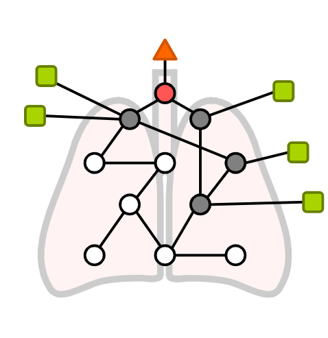
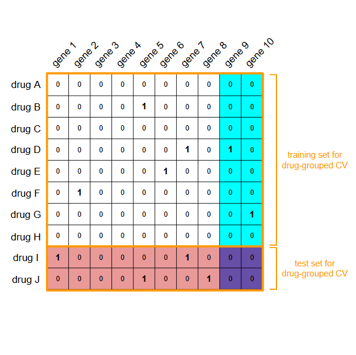

Tissue-specific networks heterogeneously predict drug effects
I built a pipeline to process GIANT2 gene functional networks and study their efficacy for drug effect prediction by the PathFX algorithm with Dr. Jen Wilson.

I built a pipeline to process GIANT2 gene functional networks and study their efficacy for drug effect prediction by the PathFX algorithm with Dr. Jen Wilson.

A language learning tool I built when I was taking Chinese classes at UCLA, but I extended it to Korean and Japanese.